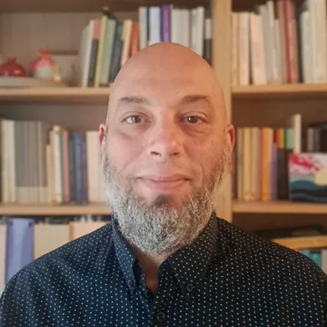

Γιάννης Μανιός
Ψυχολόγος – Ψυχοθεραπευτής
Ενήλικες · ζευγάρια · γονείς · ομάδες γονέων
Ο Γιάννης Μανιός είναι ψυχολόγος – ψυχοθεραπευτής και εργάζεται με ενήλικες, ζευγάρια και γονείς. Προσφέρει έναν χώρο όπου μπορεί κανείς να μιλήσει με ασφάλεια για όσα τον δυσκολεύουν και να κατανοήσει καλύτερα τον εαυτό του και τις σχέσεις του.
Ιδιαίτερο ενδιαφέρον στη δουλειά του έχει η γονεϊκότητα και η σχέση γονέα–παιδιού. Η καθημερινότητα με ένα παιδί φέρνει συχνά στην επιφάνεια ερωτήματα, δυσκολίες και συναισθήματα που δεν είναι πάντα εύκολο να διαχειριστούμε· η δουλειά με τους γονείς βοηθά να κατανοηθούν, ενισχύει τον γονεϊκό ρόλο και χτίζει μια πιο ουσιαστική σχέση με το παιδί.
Έχει περισσότερα από εννέα χρόνια εργασίας σε δομές ψυχοκοινωνικής φροντίδας και παιδικής προστασίας, με παιδιά, γονείς και ευάλωτους πληθυσμούς, και πολυετή εμπειρία στον συντονισμό ομάδων γονέων. Στη θεραπεία θεωρεί σημαντική μια σχέση εμπιστοσύνης και συνεργασίας, μέσα στην οποία ο καθένας εξερευνά τις δυσκολίες του με τον δικό του ρυθμό.
Αρ. άδειας 5675 · Ψυχοδυναμική ψυχοθεραπεία
Βιογραφικό ↓